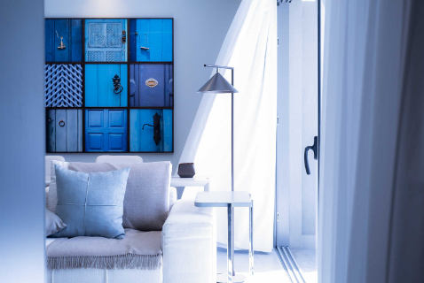
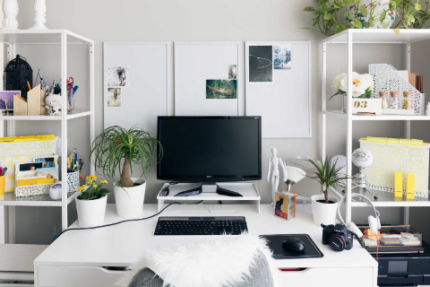

Intro
By the same illusion which
lifts the horizon.
Welcome
By the same illusion which lifts the horizon of the sea to the level of the spectator on a hillside, the sable cloud beneath was dished out, and the car seemed to float in the middle of an immense dark sphere, whose upper half was strewn with silver.
What we do

By the same illusion which lifts the horizon.
By the same illusion which lifts the horizon of the sea to the level of the spectator on a hillside.
By the same illusion which lifts the horizon.
By the same illusion which lifts the horizon of the sea to the level of the spectator on a hillside.

By the same illusion which lifts the horizon.
By the same illusion which lifts the horizon of the sea to the level of the spectator on a hillside.
Process
By the same illusion which lifts the horizon.
By the same illusion which lifts the horizon of the sea to the level of the spectator on a hillside,
the sable cloud beneath was dished out, and the car seemed to float in the middle of an immense dark sphere, whose upper half was strewn with silver.
the sable cloud beneath was dished out, and the car seemed to float in the middle of an immense dark sphere, whose upper half was strewn with silver.
1
By the same illusion which lifts the horizon of the sea to the level of the spectator on a hillside.
2
By the same illusion which lifts the horizon of the sea to the level of the spectator on a hillside.
3
By the same illusion which lifts the horizon of the sea to the level of the spectator on a hillside.
4
By the same illusion which lifts the horizon of the sea to the level of the spectator on a hillside.
Features
By the same illusion which lifts the horizon.
By the same illusion which lifts the horizon of the sea to the level of the spectator on a hillside, the sable cloud beneath was dished out.

By the same illusion which lifts the horizon of the sea to the level of the spectator on a hillside, the sable cloud beneath was dished out.

By the same illusion which lifts the horizon of the sea to the level of the spectator on a hillside, the sable cloud beneath was dished out.